Traffic signs give you important information that can ensure your safety and the safety of those around you and awareness of road rules can lower chances of accidents.
They provide us with important instructions and information on the condition of roads. They not only help in the smooth flow of traffic but also guide and warn people on how they should conduct themselves while on the roads. Drivers who are pre-informed about the points of entry, exit, turns, and other road conditions by way of traffic signs naturally make less number of mistakes and reach their destinations in a smooth manner.
Road signs inform drivers the correct lanes to take so that they can avoid blockages caused due to abrupt turns.
Provide significant information about sensitive junctions and curves, speed limit, and presence of hospitals or schools nearby so that drivers can adjust their pace accordingly.
Inform vehicle owners about available/restricted parking areas, entry and exit points, and more.
Guide heavy, medium, and light vehicles with proper division of lanes.
Ensure discipline on the roads by the implementation of lane discipline and overtaking rules.
Inform motorists about directions to take, potential dangers ahead, and rules to follow on highways.
Here are some of the ways in which traffic signs act as a traffic management tool:
There are primarily three types of traffic signs that everyone should be aware of. !
Mandatory traffic signs ensure free movement of traffic on the roads and make motorists and pedestrians mindful of rules, regulations,
and prohibitions while using the roads. Violation of mandatory traffic rules is an offence under the law. Traffic signs like One Way,
No Entry, and Overtaking Prohibited are some of the examples of mandatory traffic rules
1.Mandatory Traffic Signs:
STOP
A stop sign is a traffic sign designed to notify drivers that they must come to a complete stop and make sure no other vehicles are coming and no pedestrians are crossing before proceeding.
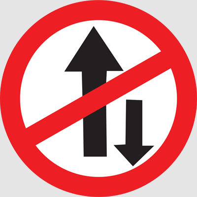
ONE WAY
One Way Traffic Signs are available in Left or Right versions. One Way signs are used to inform motorists that traffic on a street is traveling in one direction only.
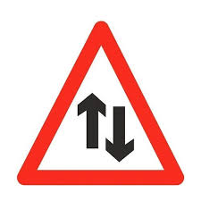
TWO WAY
Two way sign means that traffic travels in two directions. You might see it after exiting a motorway or dual carriageway or after a one-way street.
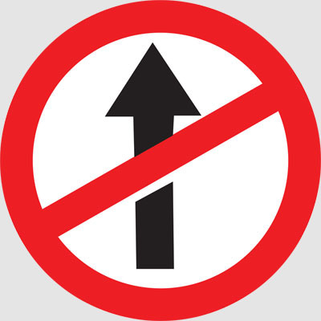
NO ENTRY
No entry sign indicate that entry into the area where the sign is displayed is forbidden.
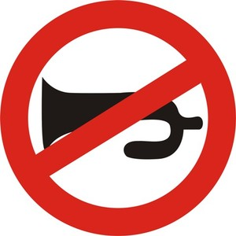
HORN PROHIBITED
Horn prohibited sign directs driver to respect the silence zone and not to use horn.
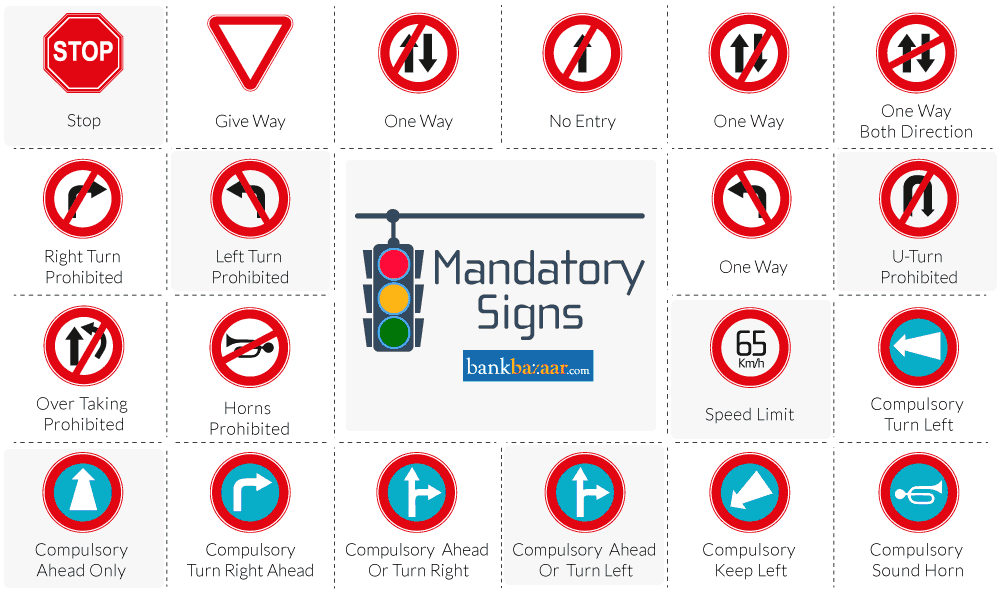
The cautionary traffic signs warn road users in advance about potential hazards and dangers on the roads. It helps drivers to be mentally prepared for any difficulties and bottlenecks while moving forward. Steep Ascent, School Ahead, Narrow Road, and Dangerous Dip are some of the examples of cautionary traffic signs.
2.Cautionary Traffic Signs:
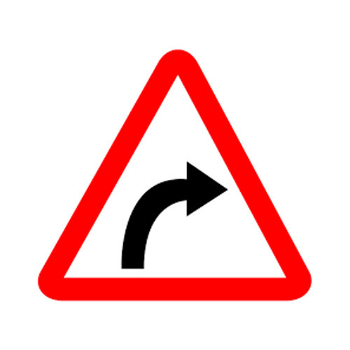
RIGHT HAND CURVE
This sign is used where the direction of alignment changes. The sign forewarns the driver to reduce the speed and proceed cautiously along the road.
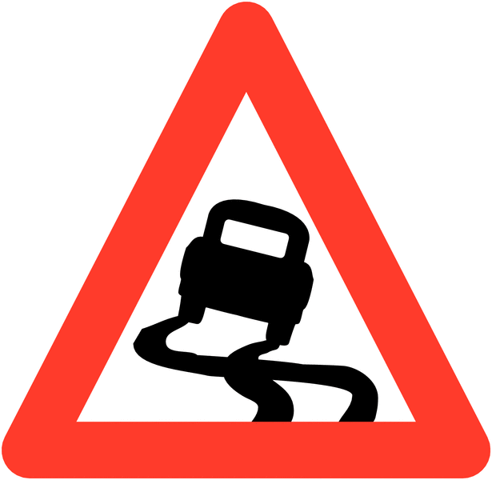
SLIPPERY ROAD
The Slippery traffic sign is used to indicate that the roadway may be especially slick and hazardous when it is wet or raining, and motorists should take extra caution when driving.
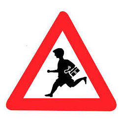
SCHOOL AHEAD
School Ahead signs give drivers advance warning of an upcoming school so they can slow down and know to watch for children crossing.
PEDESTRIAN CROSSING
A pedestrian crossing is a place designated for pedestrians to cross a road. These are designed to keep pedestrians together where they can be seen by motorists, and where they can cross most safely across the flow of vehicular traffic.
MAN AT WORK
Man at work sign board indicates that work is going on ahead.
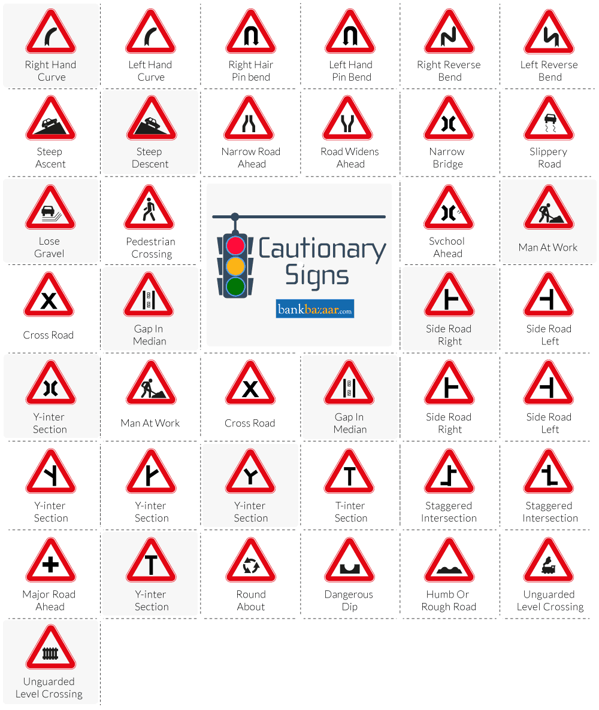
Informatory traffic signs help road users with information about the directions, distance, destinations, alternative routes, and important locations such as schools, hospitals, public toilets, and more. Some of the examples are Right Hand Curve, Pedestrian Crossing, Cattle, and more.
3.Informatory Signs:
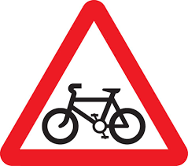
CYCLE CROSSING
This sign indicates that there may be cyclists on or crossing road ahead.
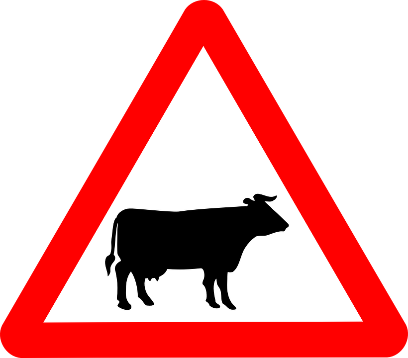
CATTLE CROSSING
The Cattle Crossing Road sign is used to alert motorists in advance of locations where unexpected entries into the roadway or shared use of the roadway by cattle might occur.
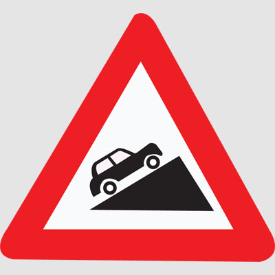
STEEP ASCENT
This road sign indicates that there is steep ascent ahead.
PEDESTRIAN CROSSING
A pedestrian crossing is a place designated for pedestrians to cross a road. These are designed to keep pedestrians together where they can be seen by motorists, and where they can cross most safely across the flow of vehicular traffic.
MAN AT WORK
Man at work sign board indicates that work is going on ahead.